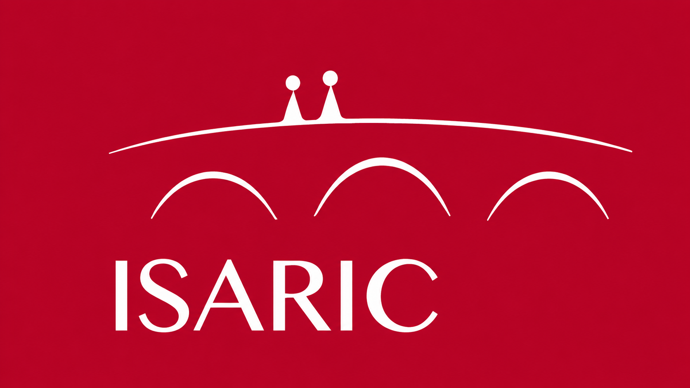

Conteúdo do Programa
O ILPS é oferecido por meio de uma combinação de aprendizado autodirigido e elementos interativos, proporcionando uma experiência de desenvolvimento abrangente e adaptada às necessidades dos participantes.

ISARIC Leadership Programme for Scientists
🟢 Inscrições abertasO ISARIC Leadership Programme for Scientists (ILPS) é um programa transformador desenvolvido para pesquisadores de carreira intermediária de países de baixa e média renda (LMICs) que estão prontos para dar o próximo passo como líderes de pesquisa independentes.
O programa capacita cientistas emergentes com habilidades de liderança, pensamento estratégico e colaboração, essenciais para avançar em suas carreiras de pesquisa e impulsionar mudanças positivas em suas instituições, comunidades e campos científicos.
O ILPS é oferecido por meio de uma combinação de aprendizado autodirigido e elementos interativos, proporcionando uma experiência de desenvolvimento abrangente e adaptada às necessidades dos participantes.
Para participar, os candidatos devem atender aos critérios de elegibilidade específicos. As inscrições para o programa estão abertas — consulte a página oficial para mais detalhes sobre o processo de candidatura.
Para informações detalhadas sobre elegibilidade, cronograma e inscrição, acesse a página oficial do programa no site do ISARIC Global:
Acessar página oficial →